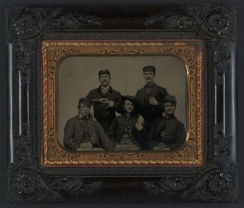

Tue, 07 Dec 2010 22:56:00 · photos · CivilWar
US Civil War Photos Collections

Check out more than 700 collections of US Civil War photos courtesy of the Library of Congress. See the gallery on Flickr.
Tue, 07 Dec 2010 22:56:00 · photos · CivilWar

Check out more than 700 collections of US Civil War photos courtesy of the Library of Congress. See the gallery on Flickr.